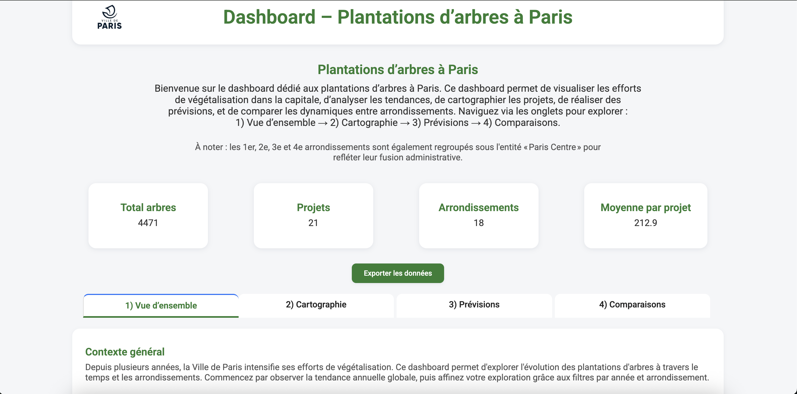
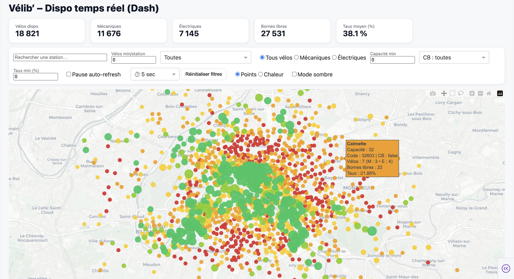
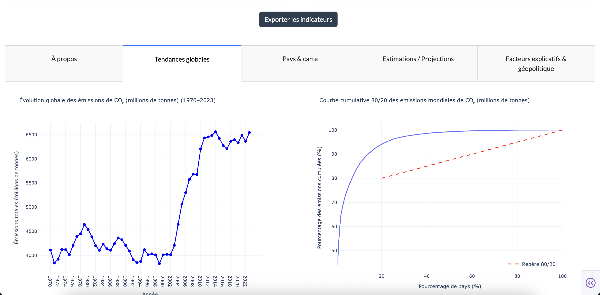

Projets

BP Monitoring — Docker & supervision applicative
Pipeline de monitoring orienté production : ingestion de données, détection d’anomalies et visualisation temps réel via Elastic. Projet conçu pour démontrer la maîtrise de Docker et des environnements reproductibles.
Captures Elastic/Kibana (cliquez pour agrandir).
Voir sur GitHub
Arbres de Paris — Audit qualité & référentiel
Audit et fiabilisation d’un référentiel open data (doublons, valeurs manquantes, cohérence), puis restitution par arrondissement/essence. Pipeline Python + dashboard pour suivi et mise à jour.
Voir sur GitHub
Vélib — Pipeline temps réel & pilotage
Ingestion API, normalisation et stockage pour analyser la disponibilité des stations. Tableau de bord orienté KPI (tension, disponibilité, zones critiques) pour support opérationnel.
Voir sur GitHub
CO₂ — Tableau de bord ESG & comparaisons pays
Tableau de bord interactif pour comparer les émissions et tendances par pays/année. Mise en avant d’indicateurs clés et d’angles d’analyse utiles au pilotage ESG.
Voir sur GitHubAutres projets disponibles sur GitHub (sur demande). Mon objectif : des livrables propres, documentés et orientés décision.